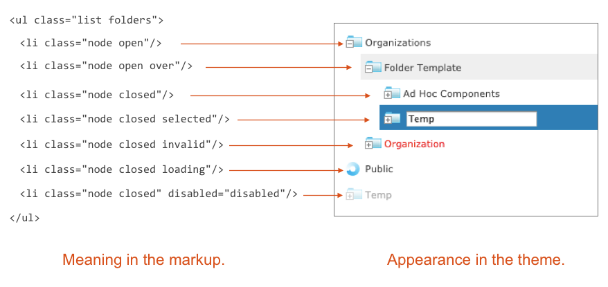
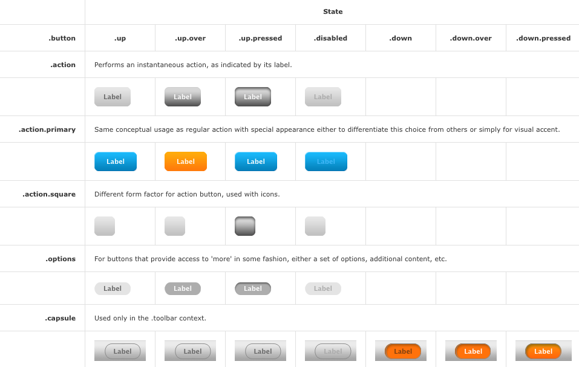
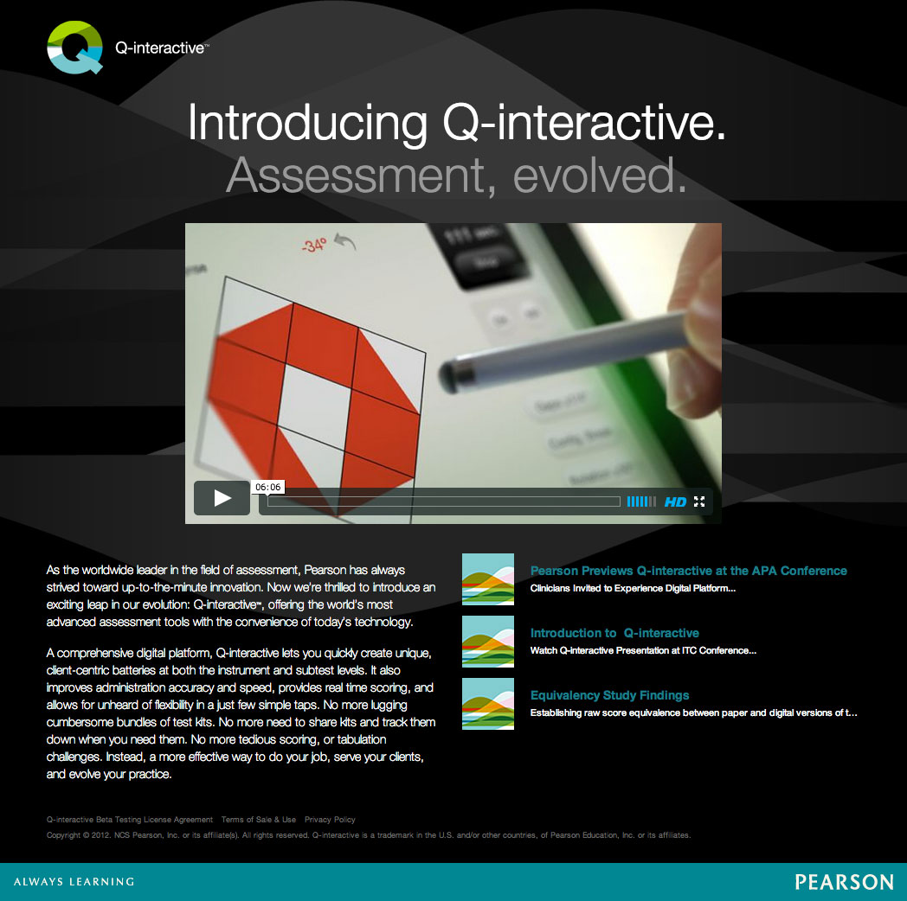
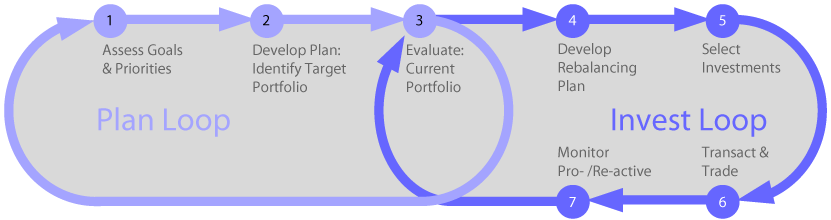
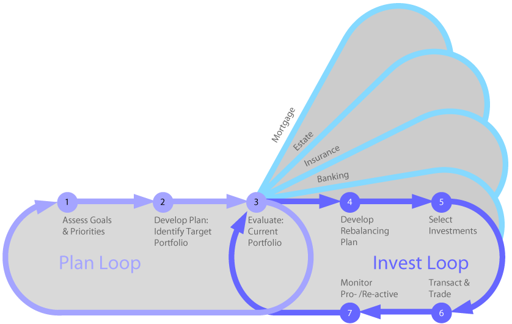
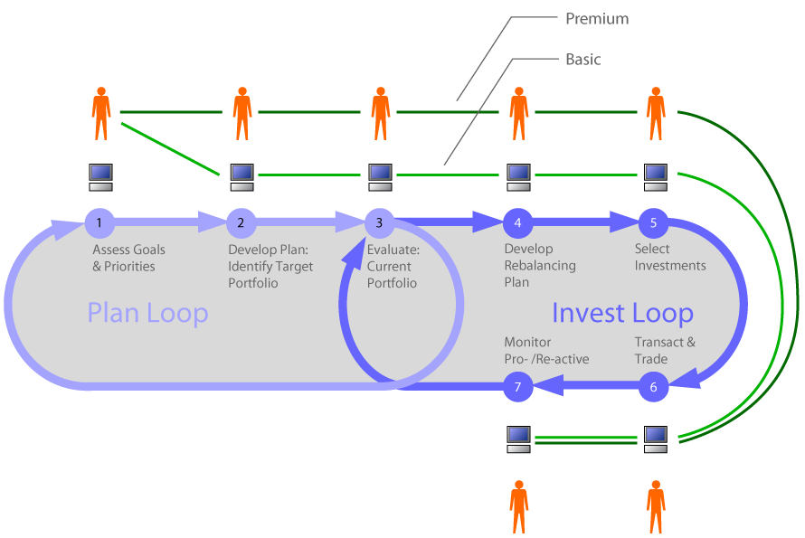
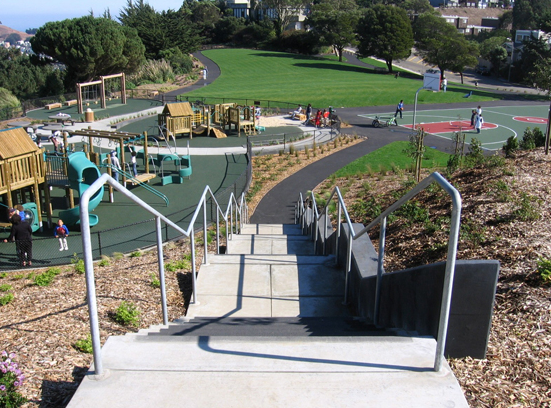
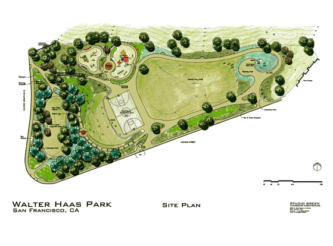

I apply a system thinking approach to the development of enterprise software, process and service models for business and the efficient execution of public-interest projects.
I excel at
I am comfortable as creative lead or supporting manpower. I bring innovation and efficiency to the strategy, research and conceptual phase of a project and continue to deliver value during implementation with expert quality presentations, specifications, prototypes and my extensive knowledge of software development processes.
Mark Hovde, Senior Vice President, Marketing, Pharsight Corporation
I joined GE's Predix platform project to develop a UX strategy and design for specific scrum team as well as create a process for integrating UX and Agile that could be exported to other scrum teams within the organization.
I exceeded expectations at this assignment by focusing first on gaining the trust of the software manager and developers on the team through my understanding of the technical details of software development. From this position of credibility I was able to inject a long term vision and structured, repeatable user-centered methods into all stages of their Agile cycle. I consolidated the value I had introduced by mentoring a young designer on the team to be able to drive the vision and the Agile/UX integration process I had developed.
Dan Harrelson, Design Director for Energy Management & Design Technology, GE
I collaborated with the fantastic folks at Hot Studio on the redesign of this self-service portal; my major contribution was an easier to understand navigational model.
As presented by Akamai:
Dani Malik, Executive Director, User Experience, Hot Studio
I transformed the user experience of Jasperserver by introducing important functionality like search and an engaging and consistent visual design. I also led the project to modernize the application front end framework, with a modular and standards-compliant design system I created and implemented before Bootstrap popularized the concept.
Simple Theming
Semantic Markup
Object-Oriented CSS
Mary M. Flynn, Worldwide Sales Engineering, Jaspersoft
Angus Croll, Architect, Jaspersoft
I worked with a team of designers on a tablet version of a previously print-only cognitive assessment system. I introduced HTML5 prototyping to our process to improve the efficiency of our communication with both our client and our development partner.
As presented by Pearson:
I was a founding faculty member for the undergraduate Interaction Design Program at California College of Art. I developed the curriculum for the Systems class that introduced sophomore students to System Thinking and taught the course for 3 years.
Here is a video about a collaboration between my systems class and Adobe
I catalyzed internal strategy discussions by introducing a model of Schwab's retail business that was simple enough for anyone to sketch on a white board.
The model, reproducible by anyone, created a shared discussion context in meetings
One variation was used to envision new business lines
Another variation helped to plan different service levels
I worked with a neighborhood group to create a process for park renovation based on community-owned design and a public-private funding model that has become the standard approach for park redevelopment in San Francisco.
Community ownership of the design process was the true innovation that we brought to a broken system of civic park stewardship.
Our first tiny grant paid for a party in the park to bring the community together around our needs. Signatures gathered at the party established credibility with a private foundation who gave us enough money to sponsor a design competition for the park. The excitement of the competition and the neighborhood meetings surrounding it resulted in a great design, and convinced both our private sponsors and the city that investing in our park would produce success for everyone.
San Francisco Public Works Website